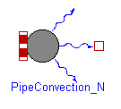
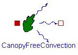
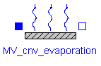
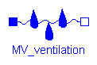
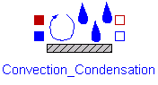
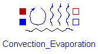
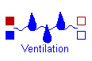
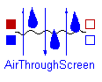
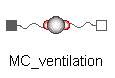
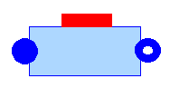

<!DOCTYPE html>
<!--[if IE 8]><html class="no-js lt-ie9" lang="en" > <![endif]-->
<!--[if gt IE 8]><!--> <html class="no-js" lang="en" > <!--<![endif]-->
<head>
  <meta charset="utf-8">
  
  <meta name="viewport" content="width=device-width, initial-scale=1.0">
  
  <title>Flows &mdash; Greenhouses  documentation</title>
  

  
  

  

  
  
    

  

  
  
    <link rel="stylesheet" href="_static/css/theme.css" type="text/css" />
  

  

  
        <link rel="index" title="Index"
              href="genindex.html"/>
        <link rel="search" title="Search" href="search.html"/>
    <link rel="top" title="Greenhouses  documentation" href="index.html"/>
        <link rel="next" title="Control Systems" href="control.html"/>
        <link rel="prev" title="Crop Yield" href="cropyield.html"/> 

  
  <script src="_static/js/modernizr.min.js"></script>

</head>

<body class="wy-body-for-nav" role="document">

  <div class="wy-grid-for-nav">

    
    <nav data-toggle="wy-nav-shift" class="wy-nav-side">
      <div class="wy-side-scroll">
        <div class="wy-side-nav-search">
          

          
            <a href="index.html" class="icon icon-home"> Greenhouses
          

          
            
            
          
          </a>

          
            
            
          

          
<div role="search">
  <form id="rtd-search-form" class="wy-form" action="search.html" method="get">
    <input type="text" name="q" placeholder="Search docs" />
    <input type="hidden" name="check_keywords" value="yes" />
    <input type="hidden" name="area" value="default" />
  </form>
</div>

          
        </div>

        <div class="wy-menu wy-menu-vertical" data-spy="affix" role="navigation" aria-label="main navigation">
          
            
            
                <ul class="current">
<li class="toctree-l1"><a class="reference internal" href="overview.html">Overview</a></li>
<li class="toctree-l1"><a class="reference internal" href="components.html">Components</a></li>
<li class="toctree-l1 current"><a class="current reference internal" href="#">Flows</a><ul>
<li class="toctree-l2"><a class="reference internal" href="#heat-flows">Heat flows</a><ul>
<li class="toctree-l3"><a class="reference internal" href="#freeconvection">FreeConvection</a></li>
<li class="toctree-l3"><a class="reference internal" href="#pipeconvection">PipeConvection</a></li>
<li class="toctree-l3"><a class="reference internal" href="#pipeconvection-n">PipeConvection_N</a></li>
<li class="toctree-l3"><a class="reference internal" href="#canopyfreeconvection">CanopyFreeConvection</a></li>
<li class="toctree-l3"><a class="reference internal" href="#outsideairconvection">OutsideAirConvection</a></li>
<li class="toctree-l3"><a class="reference internal" href="#soilconduction">SoilConduction</a></li>
<li class="toctree-l3"><a class="reference internal" href="#freeventilation">FreeVentilation</a></li>
<li class="toctree-l3"><a class="reference internal" href="#airthroughscreen">AirThroughScreen</a></li>
<li class="toctree-l3"><a class="reference internal" href="#radiation-t4">Radiation_T4</a></li>
<li class="toctree-l3"><a class="reference internal" href="#radiation-n">Radiation_N</a></li>
</ul>
</li>
<li class="toctree-l2"><a class="reference internal" href="#vapor-flows">Vapor flows</a><ul>
<li class="toctree-l3"><a class="reference internal" href="#mv-cnv-condensation">MV_cnv_condensation</a></li>
<li class="toctree-l3"><a class="reference internal" href="#mv-cnv-evaporation">MV_cnv_evaporation</a></li>
<li class="toctree-l3"><a class="reference internal" href="#mv-ventilation">MV_Ventilation</a></li>
<li class="toctree-l3"><a class="reference internal" href="#mv-airthroughscreen">MV_AirThroughScreen</a></li>
<li class="toctree-l3"><a class="reference internal" href="#mv-canopytranspiration">MV_CanopyTranspiration</a></li>
</ul>
</li>
<li class="toctree-l2"><a class="reference internal" href="#heat-and-vapor-flows">Heat and Vapor Flows</a><ul>
<li class="toctree-l3"><a class="reference internal" href="#convection-condensation">Convection_Condensation</a></li>
<li class="toctree-l3"><a class="reference internal" href="#convection-evaporation">Convection_Evaporation</a></li>
<li class="toctree-l3"><a class="reference internal" href="#ventilation">Ventilation</a></li>
<li class="toctree-l3"><a class="reference internal" href="#id8">AirThroughScreen</a></li>
<li class="toctree-l3"><a class="reference internal" href="#ventilationrates">VentilationRates</a></li>
</ul>
</li>
<li class="toctree-l2"><a class="reference internal" href="#co2-flows">CO<sub>2</sub> flows</a><ul>
<li class="toctree-l3"><a class="reference internal" href="#mc-ventilation">MC_ventilation</a></li>
<li class="toctree-l3"><a class="reference internal" href="#mc-aircan">MC_AirCan</a></li>
</ul>
</li>
<li class="toctree-l2"><a class="reference internal" href="#fluid-flows">Fluid flows</a><ul>
<li class="toctree-l3"><a class="reference internal" href="#cell1diminc">Cell1DimInc</a></li>
<li class="toctree-l3"><a class="reference internal" href="#flow1diminc">Flow1DimInc</a></li>
</ul>
</li>
</ul>
</li>
<li class="toctree-l1"><a class="reference internal" href="control.html">Control Systems</a></li>
<li class="toctree-l1"><a class="reference internal" href="examples.html">Examples</a></li>
</ul>

            
          
        </div>
      </div>
    </nav>

    <section data-toggle="wy-nav-shift" class="wy-nav-content-wrap">

      
      <nav class="wy-nav-top" role="navigation" aria-label="top navigation">
        <i data-toggle="wy-nav-top" class="fa fa-bars"></i>
        <a href="index.html">Greenhouses</a>
      </nav>


      
      <div class="wy-nav-content">
        <div class="rst-content">
          

 


<div role="navigation" aria-label="breadcrumbs navigation">
  <ul class="wy-breadcrumbs">
    <li><a href="index.html">Docs</a> &raquo;</li>
      
    <li>Flows</li>
      <li class="wy-breadcrumbs-aside">
        
          
            <a href="_sources/flows.rst.txt" rel="nofollow"> View page source</a>
          
        
      </li>
  </ul>
  <hr/>
</div>
          <div role="main" class="document" itemscope="itemscope" itemtype="http://schema.org/Article">
           <div itemprop="articleBody">
            
  <div class="section" id="flows">
<span id="id1"></span><h1>Flows<a class="headerlink" href="#flows" title="Permalink to this headline">¶</a></h1>
<p>The <strong>Flows</strong> package contains models of the flows that are encountered in a greenhouse system. It is organized in eight sub-packages that model the heat, vapor mass and CO<sub>2</sub> mass transfer, as well as fluid flow. It also contains a sub-package of interfaces, which defined the type of connectors used in the library.</p>
<div class="section" id="heat-flows">
<h2>Heat flows<a class="headerlink" href="#heat-flows" title="Permalink to this headline">¶</a></h2>
<p>The <em>HeatTransfer</em> sub-package models the heat flows in a greenhouse, which can originate from convection at surfaces, ventilation processes, conduction at the soil and long-wave infrared radiation (FIR).</p>
<p>Convective and conductive heat flows are function of the heat exchange coefficient and are described by:</p>
<div class="math notranslate nohighlight">
\[\dot{q}_{cnv,ij} = U_{ij}(T_i-T_j)\]</div>
<div class="section" id="freeconvection">
<h3>FreeConvection<a class="headerlink" href="#freeconvection" title="Permalink to this headline">¶</a></h3>
<p>Typically, convective processes in greenhouses are governed by free convection. In this case, the Nusselt (Nu) number describing the convective exchange process can be defined as a function of the Rayleigh (Ra) number <a class="reference internal" href="index.html#balemans-assessment-1989" id="id2">[Bal89]</a>. The heat exchange coefficients are therefore modeled based on the Nu-Ra relation, as presented in <a class="reference internal" href="index.html#de-zwart-analyzing-1996" id="id3">[DZ96]</a>.</p>
<p>Upward or downward heat exchange by free convection from an horizontal or tilted surface. In the greenhouse, this comprises the convection at the cover, the thermal screen and at the floor.</p>
<div class="math notranslate nohighlight">
\[
U_{AirFlr} =
\left\{
\begin{array}{
        &#64;{}% no padding
        l&#64;{\quad}% some padding
        r&#64;{}% no padding
        &gt;{{}}r&#64;{}% no padding
        &gt;{{}}l&#64;{}% no padding
}
        1.7(T_{Flr} - T_{Air})^{0.33},&amp; T_{Flr} &amp;&gt; T_{Air} \\
        1.3(T_{Air} - T_{Flr})^{0.25},&amp; T_{Flr} &amp;\leq T_{Air}
\end{array}
\right.
\]</div><div class="math notranslate nohighlight">
\[U_{AirScr} = 1.7 u_{Scr} |T_{Air}-T_{Scr}|^{0.33}\]</div>
<div class="math notranslate nohighlight">
\[U_{AirCov} = 1.7 (T_{Air}-T_{Cov})^{0.33} cos(\phi)^{-0.66}\]</div>
<div class="align-center figure">

</div>
</div>
<div class="section" id="pipeconvection">
<h3>PipeConvection<a class="headerlink" href="#pipeconvection" title="Permalink to this headline">¶</a></h3>
<p>Free convection at the pipes with the greenhouse air. For the pipes situated close to the canopy and the floor, the heat exchange is considered to be hindered, compared to a pipe in free air. The heat exchange coefficients of these forced processes are modeled by experimental results <a class="reference internal" href="index.html#bot-greenhouse-1983" id="id4">[Bot83]</a>.</p>
<div class="math notranslate nohighlight">
\[U_{FreePipeAir} = 1.28 \pi \psi_{Pipe}^{0.75} l_{Pipe} |T_{Pipe}-T_{Air}|^{0.25}\]</div>
<div class="math notranslate nohighlight">
\[U_{HinderedPipeAir} = 1.99 \pi \psi_{Pipe} l_{Pipe} |T_{Pipe}-T_{Air}|^{0.32}\]</div>
<div class="align-center figure">

</div>
</div>
<div class="section" id="pipeconvection-n">
<h3>PipeConvection_N<a class="headerlink" href="#pipeconvection-n" title="Permalink to this headline">¶</a></h3>
<p>This model is a variant of the <em>PipeConvection</em> model, in which a single-port is replaced by a multi-port, thus enabling the computation of the heat flow when using discretized pipes models.</p>
<div class="align-center figure">

</div>
</div>
<div class="section" id="canopyfreeconvection">
<h3>CanopyFreeConvection<a class="headerlink" href="#canopyfreeconvection" title="Permalink to this headline">¶</a></h3>
<p>The leaves heat exchange by free convection with the air is function of the Leaf Area Index (LAI) and the leaves heat transfer coefficient.</p>
<div class="math notranslate nohighlight">
\[U_{CanAir} = 2 \alpha_{LeafAir} LAI\]</div>
<div class="align-center figure">

</div>
</div>
<div class="section" id="outsideairconvection">
<h3>OutsideAirConvection<a class="headerlink" href="#outsideairconvection" title="Permalink to this headline">¶</a></h3>
<p>Convective heat exchange at the cover with the outside air. Convection, driven by wind speed, is considered to be forced.</p>
<div class="math notranslate nohighlight">
\[
U_{CovOut} =
\left\{
\begin{array}{
        &#64;{}% no padding
        l&#64;{\quad}% some padding
        r&#64;{}% no padding
        &gt;{{}}r&#64;{}% no padding
        &gt;{{}}l&#64;{}% no padding
}
        (2.8+1.2 v_w) \dfrac{1}{cos(\phi)},&amp; v_w &amp;&lt; 4 \\
        2.5 v_w^{0.8} \dfrac{1}{cos(\phi)},&amp; v_w &amp;\geq 4
\end{array}
\right.
\]</div><div class="align-center figure">

</div>
</div>
<div class="section" id="soilconduction">
<h3>SoilConduction<a class="headerlink" href="#soilconduction" title="Permalink to this headline">¶</a></h3>
<p>The only conductive flow considered in greenhouse modeling is the conduction through the greenhouse soil. The soil under the greenhouse floor represents a big thermal capacity with a poor thermal conductivity. The floor surface can show temperature variations of 10 K during a day. To be able to describe the temperature gradient, the soil is modeled in several layers, using the following heat exchange coefficient.</p>
<div class="math notranslate nohighlight">
\[U_{So(j-1)So(j)} = \dfrac{2}{h_{So(j-1)}/\lambda_{So(j-1)}+h_{So(j)}/\lambda_{So(j)}}\]</div>
<div class="align-center figure">

</div>
</div>
<div class="section" id="freeventilation">
<h3>FreeVentilation<a class="headerlink" href="#freeventilation" title="Permalink to this headline">¶</a></h3>
<p>Convective flows caused by ventilation processes are modeled based on the air exchange rate f<sub>ij</sub> between two air volumes <em>i</em> and <em>j</em>, as described by:</p>
<div class="math notranslate nohighlight">
\[U_{vent,AirOut} = \rho_{Air} c_{p,Air} (f_{AirOut}+f_{leakage})\]</div>
<p>The library offers two models (<em>NaturalVentilationRate_1</em> and <em>NaturalVentilationRate_2</em>) to compute the air ventilation rate caused by natural ventilation with the outside air. The models are based on two different models from the literature. By default, f<sub>AirOut</sub>  is described by the model <em>NaturalVentilationRate_2</em>, which is based on Boulard and Baille (1993).</p>
<p>The leakage rate through the greenhouse structure is dependent on the wind speed and the leakage coefficient of the greenhouse, characteristic of its structure. It can be described by:</p>
<div class="math notranslate nohighlight">
\[
f_{leakage} =
\left\{
\begin{array}{
        &#64;{}% no padding
        l&#64;{\quad}% some padding
        r&#64;{}% no padding
        &gt;{{}}r&#64;{}% no padding
        &gt;{{}}l&#64;{}% no padding
}
        0.25 c_{leakage},&amp; v_w &amp;&lt; 0.25 \\
        v_w c_{leakage},&amp; v_w &amp;\geq 0.25
\end{array}
\right.
\]</div><div class="align-center figure">

</div>
</div>
<div class="section" id="airthroughscreen">
<h3>AirThroughScreen<a class="headerlink" href="#airthroughscreen" title="Permalink to this headline">¶</a></h3>
<p>The air ventilation between the main and top air zones is caused by two mechanisms: the air through the openings in the fabric of the screen and the air through a gap when the screen is opened. Balemans, 1989studied the temperature driven air exchange through fully closed screens (u<sub>Scr</sub> =1) and derived a fitted function through experimental data. When the screen is open (u<sub>Scr</sub> &lt;1), the air exchanged through the gap, caused by density difference, will dominate the exchange through the screen. This exchange was theoretically modeled by Miguel, 1998 using the Navier-Stokes equation. Combining the air flow through the screen and through the gap, the total air ventilation rate between the air and top zones is described by:</p>
<div class="math notranslate nohighlight">
\[U_{vent,AirTop} = \rho_{Air} c_{p,Air} f_{AirTop}\]</div>
<div class="math notranslate nohighlight">
\[f_{AirTop} = u_{Scr} K_{Scr} |T_{Air}-T_{Top}|^{0.66} +
\dfrac{1-u_{Scr}}{\overline{\rho}_{Air}} \sqrt{0.5 \overline{\rho}_{Air} W (1-u_{Scr}) g |\rho_{Air}-\rho_{Top}|}\]</div>
<div class="align-center figure">

</div>
</div>
<div class="section" id="radiation-t4">
<h3>Radiation_T4<a class="headerlink" href="#radiation-t4" title="Permalink to this headline">¶</a></h3>
<p>The thermal radiation, i.e. the electromagnetic radiation emitted between two bodies <em>i</em> and <em>j</em> as a result of their temperatures, is described by the Stefan-Boltzman equation:</p>
<div class="math notranslate nohighlight">
\[\dot{q}_{rad,ij} = \epsilon_{i} \epsilon_{j} F_{ij} \sigma (T_i^4-T_j^4)\]</div>
<p>The view factors of the greenhouse elements are computed according to <a class="reference internal" href="index.html#de-zwart-analyzing-1996" id="id5">[DZ96]</a> in each component model (i.e. the components described in the <a class="reference internal" href="greenhouse.html#greenhouse"><span class="std std-ref">Greenhouse</span></a> section). The exchange with the sky, whose temperature is estimated from meteorological data by an approach proposed in <a class="reference internal" href="index.html#de-zwart-analyzing-1996" id="id6">[DZ96]</a>, is also considered.The emission coefficients are characteristic of the surfaces. For the greenhouse elements, the following values are proposed:</p>
<blockquote>
<div><table border="1" class="docutils">
<colgroup>
<col width="50%" />
<col width="50%" />
</colgroup>
<thead valign="bottom">
<tr class="row-odd"><th class="head">Component</th>
<th class="head">Value</th>
</tr>
</thead>
<tbody valign="top">
<tr class="row-even"><td>Glass cover</td>
<td>0.84</td>
</tr>
<tr class="row-odd"><td>Pipes</td>
<td>0.88</td>
</tr>
<tr class="row-even"><td>Canopy leaves</td>
<td>1.00</td>
</tr>
<tr class="row-odd"><td>Concrete floor</td>
<td>0.89</td>
</tr>
<tr class="row-even"><td>Thermal screen</td>
<td>1.00</td>
</tr>
</tbody>
</table>
</div></blockquote>
<div class="align-center figure">

</div>
</div>
<div class="section" id="radiation-n">
<h3>Radiation_N<a class="headerlink" href="#radiation-n" title="Permalink to this headline">¶</a></h3>
<p>This model is a variant of the <em>Radiation_T4</em> model, in which a single-port is replaced by a multi-port, thus enabling the computation of the radiative flow when using discretized pipes models.</p>
<div class="align-center figure">

</div>
</div>
</div>
<div class="section" id="vapor-flows">
<h2>Vapor flows<a class="headerlink" href="#vapor-flows" title="Permalink to this headline">¶</a></h2>
<div class="section" id="mv-cnv-condensation">
<h3>MV_cnv_condensation<a class="headerlink" href="#mv-cnv-condensation" title="Permalink to this headline">¶</a></h3>
<p>The vapor mass transfer caused by condensation at a surface is linearly related to its convective heat exchange coefficient by a conversion factor. In the greenhouse, condensation may occur at the lower side of the cover and the thermal screen. The model excludes evaporation at these surfaces.</p>
<div class="math notranslate nohighlight">
\[
\dot{m}_{v,ij} =
\left\{
\begin{array}{
        &#64;{}% no padding
        l&#64;{\quad}% some padding
        r&#64;{}% no padding
        &gt;{{}}r&#64;{}% no padding
        &gt;{{}}l&#64;{}% no padding
}
        0,&amp; P_{v,i} &amp;&lt; P_{v,j} \\
        6.4·10^{-9} U_{ij} (P_{v,i}-P_{v,j}),&amp; P_{v,i} &amp;\geq P_{v,j}
\end{array}
\right.
\]</div><p>Because of the direction nature of this flow, the model is not reversible and must be connected as following: air (filled port) - surface (empty port).</p>
<div class="align-center figure">

</div>
</div>
<div class="section" id="mv-cnv-evaporation">
<h3>MV_cnv_evaporation<a class="headerlink" href="#mv-cnv-evaporation" title="Permalink to this headline">¶</a></h3>
<p>The vapor mass transfer caused by evaporation at a surface is linearly related to its convective heat exchange coefficient by a conversion factor. In the greenhouse, evaporation may occur at the upper side of the thermal screen. The model excludes condensation at this surface. By allowing a mass flow rate from the upper surface of the screen to the top air compartment, the model assumes that the screen is capable of transporting water through its fabric. Water is transported from the lower side to the upper and storage of water in the screen is neglected. Therefore, evaporation from the upper side is only possible when condensation takes place at the lower side. Moreover, the evaporation rate must be lower or equal than the condensation rate.</p>
<div class="math notranslate nohighlight">
\[
\dot{m}_{v,ScrTop} =
\left\{
\begin{array}{
        &#64;{}% no padding
        l&#64;{\quad}% some padding
        r&#64;{}% no padding
        &gt;{{}}r&#64;{}% no padding
        &gt;{{}}l&#64;{}% no padding
}
        0,&amp; P_{v,Scr} &amp;&lt; P_{v,Top} \\
        min \left( 6.4·10^{-9} U_{ScrTop}, 6.4·10^{-9} U_{AirTop} \dfrac{P_{v,Air}-P_{v,Scr}}{P_{v,Scr}-P_{v,Top}} \right) (P_{v,Scr}-P_{v,Top}),&amp; P_{v,Scr} &amp;\geq P_{v,Top}
\end{array}
\right.
\]</div><p>Because of the direction nature of this flow, the model is not reversible and must be connected as following: surface (filled port) - air (empty port).</p>
<div class="align-center figure">

</div>
</div>
<div class="section" id="mv-ventilation">
<h3>MV_Ventilation<a class="headerlink" href="#mv-ventilation" title="Permalink to this headline">¶</a></h3>
<p>Mass transfer also occurs in ventilation processes. The computation of the vapor flow exchanged by ventilation from the indoor to outdoor air is modeled by:</p>
<div class="math notranslate nohighlight">
\[\dot{m}_{v,ij} = \dfrac{M_{Water} f_{ij}}{R} \left( \dfrac{P_{v,i}}{T_i}-\dfrac{P_{v,j}}{T_j} \right)\]</div>
<p>where f<sub>ij</sub> can be f<sub>AirOut</sub> or f<sub>TopOut</sub>.</p>
<div class="align-center figure">

</div>
</div>
<div class="section" id="mv-airthroughscreen">
<h3>MV_AirThroughScreen<a class="headerlink" href="#mv-airthroughscreen" title="Permalink to this headline">¶</a></h3>
<p>The computation of the vapor flow exchanged by ventilation between the main and top air zones is described similarly than in <em>MV_Ventilation</em>, but applying the air exchange coefficient f<sub>AirTop</sub>.</p>
<div class="align-center figure">

</div>
</div>
<div class="section" id="mv-canopytranspiration">
<h3>MV_CanopyTranspiration<a class="headerlink" href="#mv-canopytranspiration" title="Permalink to this headline">¶</a></h3>
<p>The vapor flow from the canopy to the greenhouse air originates from a phase interface somewhere inside the cavities of a leaf. The resistance to vapor transport from the canopy leaves to the greenhouse air is made of an internal resistance and a boundary layer resistance <a class="reference internal" href="index.html#stanghellini-transpiration-1987" id="id7">[Sta87]</a>. According to the latter, the canopy transpiration can be defined by:</p>
<div class="math notranslate nohighlight">
\[\dot{m}_{v,CanAir} = \dfrac{2 \rho_{Air} c_{p,Air} LAI}{ \Delta H \gamma (r_b+r_s)} (P_{v,Can}-P_{v,Air})\]</div>
<div class="align-center figure">

</div>
</div>
</div>
<div class="section" id="heat-and-vapor-flows">
<h2>Heat and Vapor Flows<a class="headerlink" href="#heat-and-vapor-flows" title="Permalink to this headline">¶</a></h2>
<p>In the vapor model, all flows result from convective exchange processes and in order to compute them, the heat exchange coefficient of these convective processes is used. Therefore, in order to reduce the number of connections and inputs when building a greenhouse model, the heat and vapor models of convective processes are lumped into single models in which both computations are performed simultaneously. The <em>HeatAndVaporTransfer</em> sub-package includes the lumped models.</p>
<div class="section" id="convection-condensation">
<h3>Convection_Condensation<a class="headerlink" href="#convection-condensation" title="Permalink to this headline">¶</a></h3>
<p>Combines the equations of <em>FreeConvection</em> and <em>MV_cnv_condensation</em>.</p>
<div class="align-center figure">

</div>
</div>
<div class="section" id="convection-evaporation">
<h3>Convection_Evaporation<a class="headerlink" href="#convection-evaporation" title="Permalink to this headline">¶</a></h3>
<p>Combines the equations of <em>FreeConvection</em> and <em>MV_cnv_evaporation</em>.</p>
<div class="align-center figure">

</div>
</div>
<div class="section" id="ventilation">
<h3>Ventilation<a class="headerlink" href="#ventilation" title="Permalink to this headline">¶</a></h3>
<p>Combines the equations of <em>FreeVentilation</em> and <em>MV_ventilation</em>.</p>
<div class="align-center figure">

</div>
</div>
<div class="section" id="id8">
<h3>AirThroughScreen<a class="headerlink" href="#id8" title="Permalink to this headline">¶</a></h3>
<p>Combines the equations of <em>AirThroughScreen</em> from the <em>HeatTransfer</em> sub-package and <em>MV_AirThroughScreen</em>.</p>
<div class="align-center figure">

</div>
</div>
<div class="section" id="ventilationrates">
<h3>VentilationRates<a class="headerlink" href="#ventilationrates" title="Permalink to this headline">¶</a></h3>
<p>This sub-package contains two different models for computing the air exchange rate in convective processes, and a model for computing the air rate due to a forced ventilation system.</p>
<ul class="simple">
<li><strong>NaturalVentilationRate_1</strong>: based on <a class="reference internal" href="index.html#jong-1991" id="id9">[Jon91]</a>. The air exchange rate is modeled in function of the wind and temperature. The contribution of the temperature driven ventilation in the total ventilation is small but can be important during nighttime and winter. The wind speed driven ventilation is computed differently for vents in the windward side and the leeside side. The air exchange is related to the wind speed and the opening of a window.</li>
</ul>
<div class="math notranslate nohighlight">
\[f_{AirOut} = 0.5 fr_{window} \sqrt{ \Phi_{wind}^2 + \Phi_{temp}^2}\]</div>
<div class="math notranslate nohighlight">
\[\Phi_{wind} = \left( 2.29·10^{-2} (1- exp(-\theta /21.1) + 1.2·10^{-3} \theta exp(\theta /211) \right) A_{window} u_{wind}\]</div>
<div class="math notranslate nohighlight">
\[\Phi_{temp} = C_f l/3 \sqrt{|g \beta \Delta T|} h^{1.5} \left[ \left( sin(\psi)-sin(\psi-\theta_l) \right)^{1.5} + \left( sin(\psi)-sin(\psi-\theta_w) \right)^{1.5} \right]\]</div>
<ul class="simple">
<li><strong>NaturalVentilationRate_2</strong>: based on <a class="reference internal" href="index.html#boulard-simple-1993" id="id10">[BB93]</a>. The air ventilation ratedepends mainly on the windows opening (u<sub>vent</sub>) and is influenced by the wind pressure coefficient and the coefficient of energy discharge caused by friction at the windows.</li>
</ul>
<div class="math notranslate nohighlight">
\[f_{AirOut} = \dfrac{u_{vent} A_{Roof} C_{d}}{2 A_{Flr}} \sqrt{g \dfrac{h_{vent}}{2} \dfrac{T_{Air}-T_{Out}}{\overline{T}} + C_w v_w^2 }\]</div>
<div class="align-center figure">

</div>
<ul class="simple">
<li><strong>ForcedVentilationRate</strong>: The air exchange rate caused by a mechanical ventilation system is function of the speficic air flow capacity of the ventilation system and its control.</li>
</ul>
<div class="math notranslate nohighlight">
\[f_{ventForced} = U_{VentForced} \dfrac{\phi_{VentForced}}{A_{Floor}}\]</div>
<div class="align-center figure">

</div>
</div>
</div>
<div class="section" id="co2-flows">
<h2>CO<sub>2</sub> flows<a class="headerlink" href="#co2-flows" title="Permalink to this headline">¶</a></h2>
<p>In the greenhouse, there are three CO<sub>2</sub> flows associated to the ventilation processes and two forced flows, i.e. the canopy consumption and the CO<sub>2</sub> enrichment.</p>
<div class="section" id="mc-ventilation">
<h3>MC_ventilation<a class="headerlink" href="#mc-ventilation" title="Permalink to this headline">¶</a></h3>
<p>The CO<sub>2</sub> flow accompanying an air flow is function of the air flow rate and can be described by:</p>
<div class="math notranslate nohighlight">
\[\dot{m}_{c,ij} = f_{ij}(CO_{2,i}-CO_{2,j})\]</div>
<div class="align-center figure">

</div>
</div>
<div class="section" id="mc-aircan">
<h3>MC_AirCan<a class="headerlink" href="#mc-aircan" title="Permalink to this headline">¶</a></h3>
<p>The greenhouse CO<sub>2</sub> net assimilation rate by the canopy is computed in the yield model and used as an input in this model.</p>
<div class="align-center figure">

</div>
</div>
</div>
<div class="section" id="fluid-flows">
<h2>Fluid flows<a class="headerlink" href="#fluid-flows" title="Permalink to this headline">¶</a></h2>
<div class="section" id="cell1diminc">
<h3>Cell1DimInc<a class="headerlink" href="#cell1diminc" title="Permalink to this headline">¶</a></h3>
<p>Fluid flows are modeled using the finite volume approach by means of a discretized model for incompressible flow, adapted from <a class="reference internal" href="index.html#quoilin-thermocycle-2014" id="id11">[QDW+14]</a>. The model distinguishes between two types of variables: cell and node variables. The basic fluid flow component is a cell in which the dynamic energy balance and static mass and momentum balances are applied. Node variables correspond to the inlet and outlet nodes of each cell. The relation between the cell and node values depend on the selected discretization scheme (upwind or central differences). In the cell, uniform velocity through the cross section and constant pressure are assumed. Axial thermal energy transfer is neglected.</p>
<div class="align-center figure">

</div>
</div>
<div class="section" id="flow1diminc">
<h3>Flow1DimInc<a class="headerlink" href="#flow1diminc" title="Permalink to this headline">¶</a></h3>
<p>The overall flow model can be build by connecting several cells in series. The model is compatible with the textit{Media} package of the Modelica Standard Library, at the condition that the considered fluid is incompressible.</p>
<div class="align-center figure">

</div>
</div>
</div>
</div>


           </div>
          </div>
          <footer>
  
    <div class="rst-footer-buttons" role="navigation" aria-label="footer navigation">
      
        <a href="control.html" class="btn btn-neutral float-right" title="Control Systems" accesskey="n">Next <span class="fa fa-arrow-circle-right"></span></a>
      
      
        <a href="cropyield.html" class="btn btn-neutral" title="Crop Yield" accesskey="p"><span class="fa fa-arrow-circle-left"></span> Previous</a>
      
    </div>
  

  <hr/>

  <div role="contentinfo">
    <p>
        &copy; Copyright 2018, Queralt Altes-Buch.

    </p>
  </div>
  Built with <a href="http://sphinx-doc.org/">Sphinx</a> using a <a href="https://github.com/snide/sphinx_rtd_theme">theme</a> provided by <a href="https://readthedocs.org">Read the Docs</a>. 

</footer>

        </div>
      </div>

    </section>

  </div>
  


  

    <script type="text/javascript">
        var DOCUMENTATION_OPTIONS = {
            URL_ROOT:'./',
            VERSION:'',
            COLLAPSE_INDEX:false,
            FILE_SUFFIX:'.html',
            HAS_SOURCE:  true
        };
    </script>
      <script type="text/javascript" src="_static/jquery.js"></script>
      <script type="text/javascript" src="_static/underscore.js"></script>
      <script type="text/javascript" src="_static/doctools.js"></script>
      <script type="text/javascript" src="https://cdnjs.cloudflare.com/ajax/libs/mathjax/2.7.1/MathJax.js?config=TeX-AMS-MML_HTMLorMML"></script>

  

  
  
    <script type="text/javascript" src="_static/js/theme.js"></script>
  

  
  
  <script type="text/javascript">
      jQuery(function () {
          SphinxRtdTheme.StickyNav.enable();
      });
  </script>
   

</body>
</html>